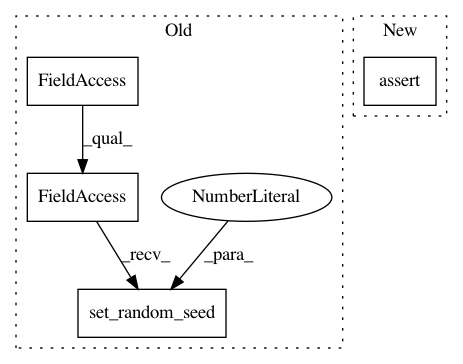

d9ef1ee4303a0862a3a127bfea954f06811b06ba,tf_agents/policies/q_policy_test.py,QPolicyTest,testUpdate,#QPolicyTest#,156
Before Change
self.assertAllEqual([[1]], self.evaluate(mode))
def testUpdate(self):
tf.compat.v1.set_random_seed(1)
policy = q_policy.QPolicy(
self._time_step_spec, self._action_spec, q_network=DummyNet())
new_policy = q_policy.QPolicy(
self._time_step_spec, self._action_spec, q_network=DummyNet())
After Change
new_action = self.evaluate(new_action_step.action)
self.assertTrue(np.all(action >= 0) and np.all(action <= 1))
self.assertTrue(np.all(new_action >= 0) and np.all(new_action <= 1))
self.assertAllEqual(action, new_action)
def testActionSpecsCompatible(self):
q_net = DummyNetWithActionSpec(self._action_spec)
q_policy.QPolicy(self._time_step_spec, self._action_spec, q_net)
In pattern: SUPERPATTERN
Frequency: 4
Non-data size: 4
Instances
Project Name: tensorflow/agents
Commit Name: d9ef1ee4303a0862a3a127bfea954f06811b06ba
Time: 2019-08-07
Author: wun@google.com
File Name: tf_agents/policies/q_policy_test.py
Class Name: QPolicyTest
Method Name: testUpdate
Project Name: tensorflow/agents
Commit Name: d9ef1ee4303a0862a3a127bfea954f06811b06ba
Time: 2019-08-07
Author: wun@google.com
File Name: tf_agents/policies/q_policy_test.py
Class Name: QPolicyTest
Method Name: testActionScalarSpec
Project Name: tensorflow/agents
Commit Name: 9a3e9d21273da7ae40da9f70cb6df1b077b08105
Time: 2019-12-05
Author: kbanoop@google.com
File Name: tf_agents/networks/actor_distribution_network_test.py
Class Name: ActorDistributionNetworkTest
Method Name: testDropoutFCLayersWithConv
Project Name: tensorflow/agents
Commit Name: d9ef1ee4303a0862a3a127bfea954f06811b06ba
Time: 2019-08-07
Author: wun@google.com
File Name: tf_agents/policies/q_policy_test.py
Class Name: QPolicyTest
Method Name: testAction